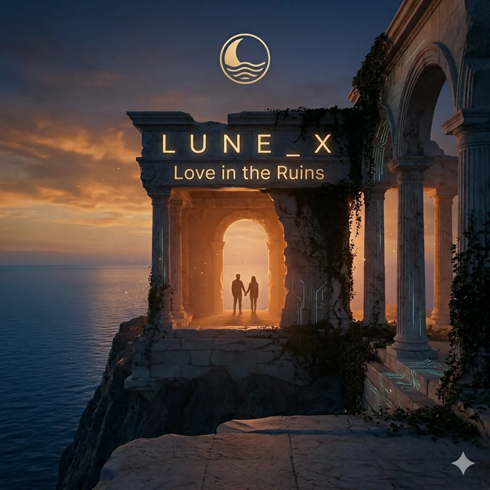
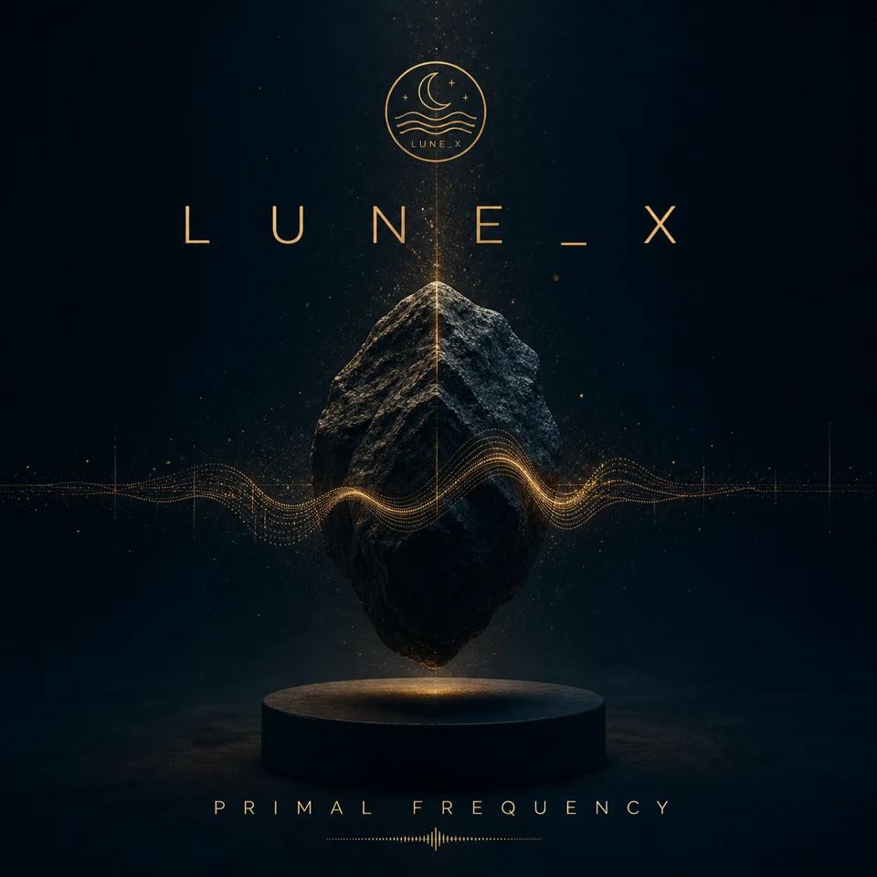
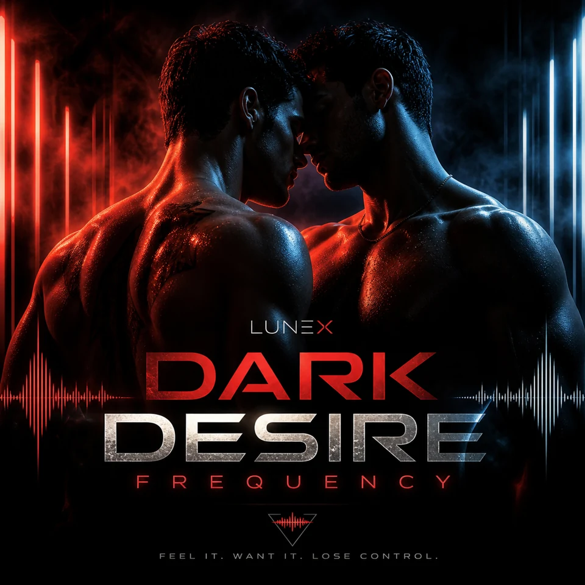
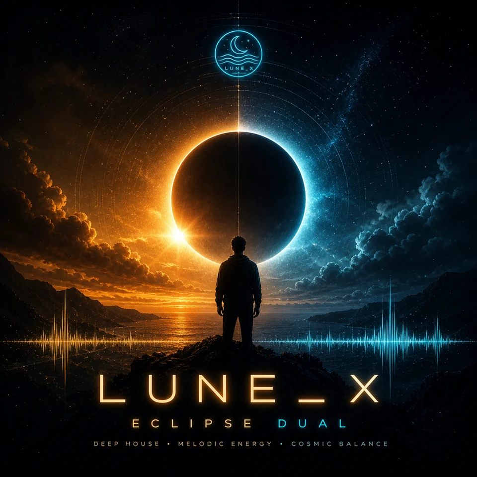
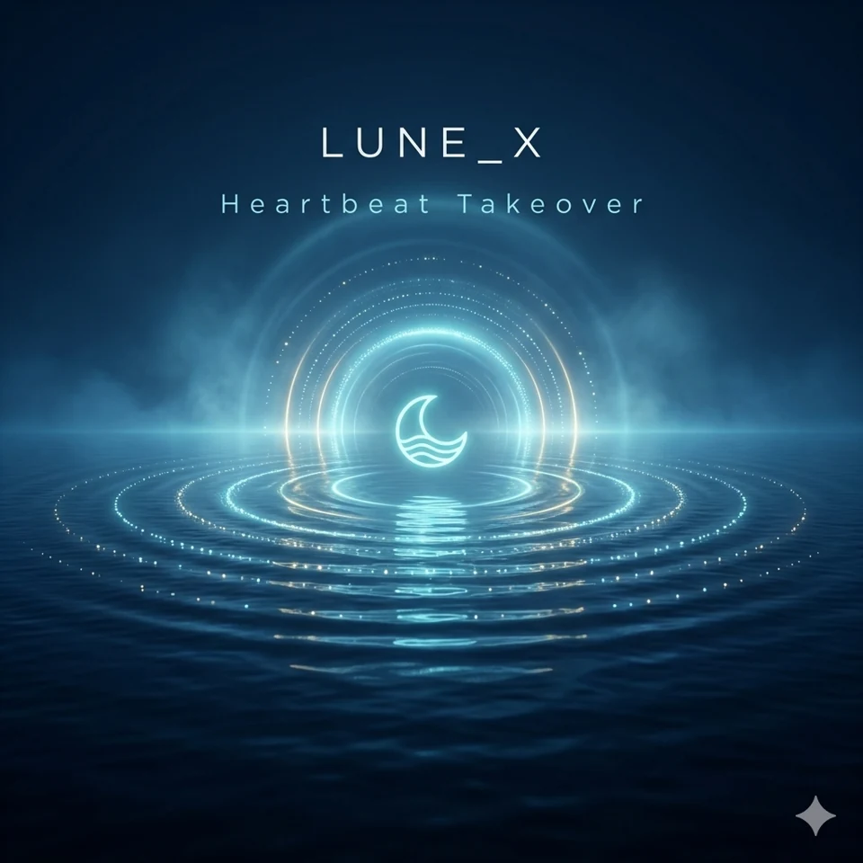
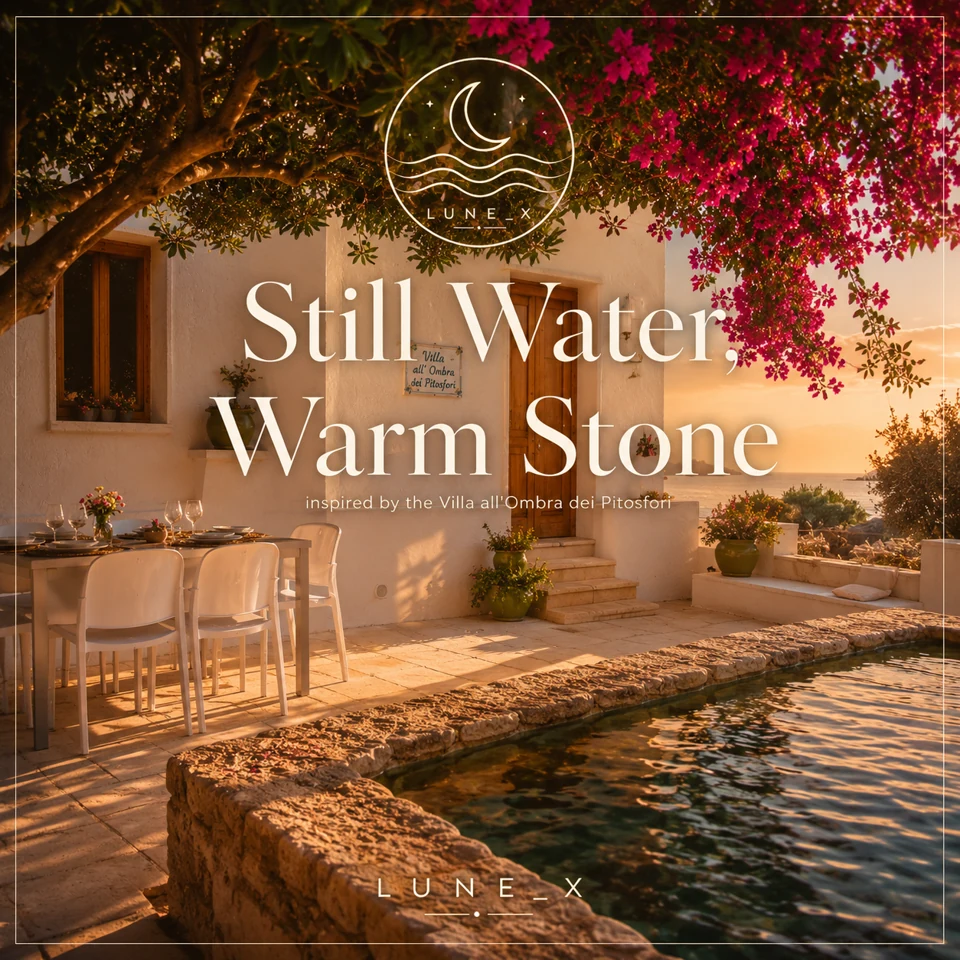

LA TRASFORMAZIONE / 01
Frattura Notturna
La notte cambia forma, e tu con lei.
▶ Guarda il nuovo videoclip su YouTube ↗
Vai al profilo Spotify ↗LUNE_X · L'ESPERIENZA UFFICIALE
Una notte, molte direzioni. Trova la tua frequenza.
Lune_X è un progetto musicale virtuale, con direzione creativa umana e produzione assistita da AI. Elettronica, intimità e libertà mediterranea: il viaggio comincia da un ascolto.
INIZIA DA QUI · 28 SECONDI CIASCUNO
Lasciati guidare da un’atmosfera. Tre estratti, tre modi diversi di entrare nel mondo di Lune_X. Premi play, poi scegli dove restare.
LA TRASFORMAZIONE / 01
La notte cambia forma, e tu con lei.
▶ Guarda il nuovo videoclip su YouTube ↗
Vai al profilo Spotify ↗
L'INTIMITÀ / 02
Il momento in cui il buio diventa chiarezza.
Vai al profilo Spotify ↗
LA LIBERTÀ / 03
Il Mediterraneo, una città, la voglia di partire.
Vai al profilo Spotify ↗Tre estratti ufficiali di circa 28 secondi. Riproduzione solo su tua richiesta; per i brani integrali usa i servizi musicali.
ASCOLTA SU YOUTUBE
Dieci album, un canale ufficiale. Scegli una playlist, segui il filo di un album e continua il viaggio di Lune_X su YouTube.
LUNE_X · CATALOGUE
Una traccia apre una porta. Un album ti porta più lontano. Esplora le uscite e continua l’ascolto sulle piattaforme ufficiali.

01 · 14 tracce

02 · 10 tracce

03 · 10 tracce

04 · 8 tracce

05 · 9 tracce

06 · 10 tracce
07 · 10 tracce
08 · 10 tracce
09 · 10 tracce

10 · 8 tracce
OLTRE IL PLAY
C’è la tensione di una notte che cambia. C’è il silenzio che diventa intimità. E poi la luce, il Mediterraneo, la voglia di partire. Lune_X attraversa queste atmosfere con dance, pop ed elettronica: ogni uscita è un’altra direzione da esplorare.
Esplora tutte le uscite ↗IDENTITÀ VISIVA
Il viaggio continua negli artwork: città, materia e paesaggi estivi. Tre concept promozionali del progetto, non campagne pubblicitarie acquistate né oggetti in vendita.
DIETRO LUNE_X
Dietro il nome virtuale ci sono scelte umane: una direzione creativa, un immaginario, un modo di raccontare. L’AI partecipa alla produzione; la visione artistica resta umana. È da questo incontro che prende forma Lune_X.
Conosci il progetto ↗SELEZIONE EDITORIALE

Ogni tanto il viaggio incontra un’altra voce. La selezione editoriale di questo mese è Pier Paolo Piccioni con «Presunte Realtà — Radio Edit»: un ascolto per scoprire un linguaggio diverso e lasciargli spazio.
Scopri la selezione su Spotify ↗COLLABORAZIONI
Una scena da accompagnare. Un luogo a cui dare atmosfera. Un’idea da mettere in movimento. Raccontaci il tuo progetto: ogni collaborazione parte da un confronto e dalla verifica dei diritti per l’uso della musica.
Proponi una collaborazione ↗
SEGUI LA FREQUENZA
CI VEDIAMOFUORI DA QUI
Un’uscita, un’immagine, una nuova direzione. Continua a seguire il progetto sui suoi canali ufficiali.